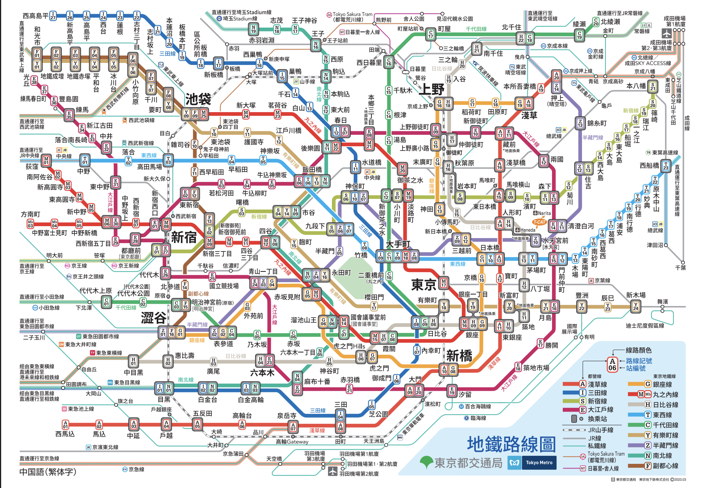

✈️ 來回航班資訊 (01/08 - 01/16)
去程：01/08 (四) CI108
- 出發：TPE 臺灣桃園國際機場 第二航廈 (14:25)
- 抵達：NRT 成田國際機場 (18:30)
- 交通：確認購買來回Skyliner、地鐵三日券。
回程：01/16 (五) CI101
- 出發：NRT 成田國際機場 第二航廈 (14:35)
- 抵達：TPE 臺灣桃園國際機場 (17:45)
⚠️ 請提前抵達機場並注意登機時間。
🗓️ 行程總覽 (9 天)
下午：抵達 NRT 成田機場
晚上：前往 The Apartment Hotel by Stylio Yoyogi 1 (抵達)
午餐：敘敘苑 六本木本店 (已訂位)
下午/傍晚：neel神宮前 → GARIGUETTE → I'm donut ? SHIBUYA → 澀谷 SKY
上午：TOURNAGE Jingumae → 表參道Hills → The Matcha Tokyo Omotesandō
午餐/下午：涉谷逛街區 → Shake Shack Shibuya → 代官山 → 中目黑
上午：Path → 原宿 → Sama Curry Meijijingumae
午餐/下午：Ikedaya TeaStore Matcha → HARBS LUMINE EST新宿店 → 新宿區
晚餐：東京油組總本店 西新宿組
上午：築地場外市場 (早市) → BONGEN COFFEE Tokyo Ginza
午餐/下午：仲見世商店街 → 淺草寺 雷門 → 八十八良葉舍 淺草 → Suzukien Asakusa matcha gelato
⚠️ 晚餐備註：考慮在百貨公司or大超市買晚餐回去煮。
午餐：今半Ningyocho Imahan Shinjuku Takashimaya (尚未訂位)
下午：鶴岡八幡宮 → 鎌倉小町通 → Giraffa Curry Pan → 鎌倉大佛殿高德院 → 鎌倉高校前 (灌籃高手)
傍晚/晚餐：Enoshima Nagisa Parking Area → 利久牛舌 LUMINE EST新宿店 (晚餐)
上午：BUTTER Hoboku Rakunojo → 五代目 花山烏冬 日本橋店
午餐/下午：Tendon Itsuki Ginza → PATISSERIE TEN& (強強強泡芙)
晚餐：Yakiniku Yamashofu Omotesando store → Iruca Tokyo Roppongi (備案：聽說很好吃，但排不進去了)
上午：Levain → 前往 NRT 成田國際機場
下午：搭乘航班回國
🍣 美食分類 (餐廳與甜點清單)
燒肉 / 壽喜燒
- 敘敘苑 六本木本店 (Day 2 午餐) - 已訂位
- MEAT MAN Roppongi (Day 3 晚餐)
- 今半 Ningyocho (Day 7 午餐) - 尚未訂位
- Yakiniku Yamashofu Omotesando store (Day 8 晚餐)
拉麵 / 烏冬 / 天丼
- Afuri Shibuya Dōgenzaka (Day 2 晚餐)
- 東京油組總本店 西新宿組 (Day 4 晚餐)
- 五代目 花山烏冬 日本橋店 (Day 8 午餐)
- Tendon Itsuki Ginza (Day 8 午餐)
- Iruca Tokyo Roppongi (Day 8 備案) - 聽說很好吃，但排不進去了 (可作為備案)
甜點 / 咖啡 / 抹茶
- The Matcha Tokyo Omotesandō (Day 3)
- HARBS LUMINE EST新宿店 (Day 4)
- Suzukien Asakusa matcha gelato (Day 5)
- BONGEN COFFEE Tokyo Ginza (Day 5)
- PATISSERIE TEN& (Day 8) - 強強強泡芙！
💰 分帳記錄 (Split the Bill)
💡 實用資訊
匯率換算
當前參考匯率：1 JPY ≈ 0.20 TWD
東京地鐵路線圖
點擊下方的圖片可放大查看。
⚠️ 提示：如果點擊後無法放大，請使用雙指縮放功能。
72小時地鐵券 (Tokyo Subway Ticket) 不適用路線
- 所有 JR 線：包括 JR 山手線、JR 中央線等.
- 所有私鐵線：包括京王線、小田急線、東急線等.
- 部分公營路線：百合海鷗線、日暮里-舍人線、Tokyo Sakura Tram (都電荒川線).
- 重要提醒：此券不適用於往返機場的 Skyliner (京成電鐵特急).
- ✅ 適用範圍：東京 Metro (9 條線) + 都營地下鐵 (4 條線).
☀️ 每日氣候預報 (1/8 - 1/16)
以下為預測數據，請以出發前一天的即時預報為準：
1/8 (四) - 1/12 (一)
- 1/8：☀️ 晴朗，5°C ~ 11°C
- 1/9：🌤️ 多雲，3°C ~ 9°C
- 1/10：☀️ 晴朗，4°C ~ 10°C
- 1/11：☀️ 晴朗，3°C ~ 8°C
- 1/12：🌤️ 多雲，2°C ~ 7°C (築地/淺草)
1/13 (二) - 1/16 (五)
- 1/13：🥶 山區晴朗，-3°C ~ 5°C (富士山)
- 1/14：☀️ 晴朗，4°C ~ 11°C （鎌倉）
- 1/15：🌤️ 多雲，5°C ~ 12°C (銀座)
- 1/16：☀️ 晴朗，3°C ~ 10°C (返程日)
穿著建議與提醒
- 東京市區/鎌倉： 平均 2°C ~ 10°C，天氣晴朗乾燥為主，體感寒冷。
- 富士山： 氣溫可能低於 0°C，山區風大。
- 建議： 採洋蔥式穿法，內層發熱衣，中層毛衣，外層防風保暖大衣/羽絨外套。
行李清單提醒
- 必備保暖： 羽絨外套、防風外套、圍巾、手套、毛帽.
- 電器與卡片：護照、日圓現金、信用卡、Suica卡、充電線/行動電源.
- 自備用品 (建議)：常備藥品 (止痛藥、腸胃藥、感冒藥).
住宿與聯繫
飯店：The Apartment Hotel by Stylio Yoyogi 1
地址：〒151-0053 東京都渋谷区代々木４丁目６−4
入住/退房：16:00/10:00
東京必要緊急電話
- 警察 (Police)：110
- 救護車/火警 (Ambulance/Fire)：119
- 日本旅遊服務中心 (JNTO)：050-3816-2787 (全年無休，24h)